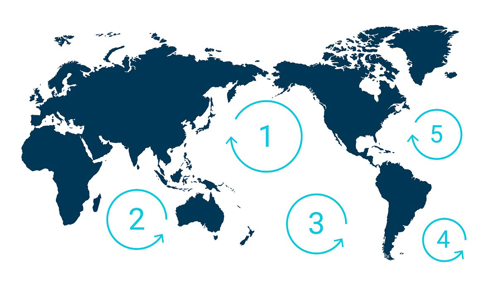

Map of Rubbish patches in the Ocean
Causes & Effects of Ocean Pollution
There are many different things that cause ocean pollution and with ocean pollution becoming a bigger concern in turn the effects have more and more impacts. This page will explain the many different causes of ocean pollution and the various effects that this has on marine life and even humans.
Causes
There are various factors that cause ocean pollution and one of the main causes is single-use plastics. It causes ocean pollution because the wind can carry the rubbish; which most of the time is plastic which takes hundereds of years to biodegrade, then in turn staying in the ocean and polluting it for hundereds of years. Another cause is runoff which is caused by water not absorbing in the land carrying toxic substances and flowing into the ocean and other bodies of water.
Effects
With many causes there also comes many effects. Ocean pollution affects marine animals and their habitats. Ocean debris can kill off marine species if they ingest or become tangled in the debris. Another effect of ocean pollution is the debris can enter the food chain. Marine animals sometime mistake plastic floating in the sea as food. This ends up in the animal eventually ending up in humans as seafood is a primary food source for humans.